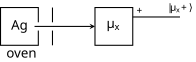

3 The Postulates of Quantum Mechanics
Having established some mathematical formalism, we now have enough tools at our disposal to begin a proper treatment of quantum mechanics. The first step in our journey will be establishing a few fundamental postulates that will make up the foundation of quantum theory. Here, we will motivate the need for such postulates, discuss them in detail, and put them to use with the discussion of a real-world experiment conducted at the turn of the previous century.
3.1 What are Postulates?
Firstly, what even are postulates? Why do we even need them? Formally, a postulate (sometimes called an axiom) is a statement that we take to be true without proof. In other words, we will treat a postulate as fact without providing rigorous mathematical justification for that fact.
Why do we need these? Can’t we just start writing down equations? Well, if we were to try writing down equations, what would they represent? Also, what rules do we go by when writing down these equations? Physics, at its core, aims to explain real-world phenomena through a mathematical framework, and as such we need some “ground rules” for how our theory will work. From there, we’ll have a baseline from which we can build upwards and derive new results to explain new phenomena. These postulates will largely come from our observations in nature…
Why do we need these? Can’t we just start writing down equations? Well, if we were to try writing down equations, what would they represent? Physics, at its core, aims to explain real-world phenomena through a rigorous mathematical framework. As such, we need a bridge to translate certain physical observations to the formalism we’ll use in our theory. From there, once we have a baseline, we can build upwards and derive new reslts to explain new phenomena. That being said, we have to start somewhere, and the easiest place to start is nature. In other words, we can make certain observations of physical phenomena, and use the results of these observations to write down more formal statements that can be further experimentally tested (and ideally confirmed).
Example 3.1 (Euclid’s Elements) In mathematics, the need for postulates (and how they arise) is a bit clearer to illustrate, so we will motivate postulates first with Euclid’s Elements, which form the foundation of the Euclidean geometry taught in high school. They are as follows:
- A straight line segment can be drawn joining any two points.
- Any straight line segment can be extended indefinitely in a straight line.
- Given any straight line segment, a circle can be drawn having the segment as radius and one endpoint as center.
- All right angles are congruent.
- If two lines are drawn which intersect a third in such a way that the sum of the inner angles on one side is less than two right angles, then the two lines inevitably must intersect each other on that side if extended far enough1.
At face value, these all appear obvious. But how do we know that they’re true? The short answer is that we just do. We accept that each is a thing that is possible (and it’s quite simple to convince ourselves that it’s always possible to draw a line through two points, for example), but we make no attempts to actually rigorously prove that they’re true mathematically. We use these always-true statements to then derive new results that we actually can prove.
Have we seen any postulates in physics before? As it turns out, yes we have! Although we didn’t quite refer to it this way, Newton’s first law of motion is, at its core, a statement we make without proof based purely on observation:
An object in motion will remain in motion (and an object at rest will remain at rest) unless acted upon by an external force.
This is not a law that we prove mathematically; rather, we use it to explicitly define what an inertial reference frame is, which we then use to develop more of Newtonian mechanics. We now wish to do the same with quantum mechanics, to connect the formalism we’ve developed to real-world experimental results.
3.2 The (Incomplete) Postulates
We are now ready to state the postulates of quantum mechanics, in a slightly incomplete form. They are as follows:
Theorem 3.1 (Postulates of Quantum Mechanics (Incomplete)) The incomplete form of the postulates of quantum mechanics are as follows:
- Every physical system is associated with a Hilbert space \(\mathcal{E}\), with the vectors of this called kets.
- Every pure state2 of a physical system is associated with a definite ray in \(\mathcal{E}\).
- Every measurement that can be carried out on the system corresponds to a complete Hermitian operator \(A\), otherwise called an observable.
- The possible results of measurement are the eigenvalues \(A\), either discrete (\(a_1, a_2, \dots\)) or continuous (\(a(\nu)\)).
- In the discrete case, the probability of measuring a particular eigenvalue \(A=a_n\) is given by: \[\mathrm{Prob}(A=a_n) = \frac{\expval{P_n}{\psi}}{\braket{\psi}};\] Here, \(P_n\) is the projection operator onto eigenspace \(\mathcal{E}_n\) corresponding to eigenvalue \(a_n\), and \(\ket{\psi}\) is any nonzero ket in the ray representing the state of the system. In the continuous case, the probability of measuring some \(A\) as lying somewhere in the interval \(I=[a_0,a_1]\) is given by: \[\mathrm{Prob}(A\in I) = \frac{\expval{P_I}{\psi}}{\braket{\psi}};\] In this case, \(P_I\) is the projection operator corresponding to the interval \(I\)3.
- After a measurement with some discrete outcome \(A=a_n\), the system is represented by the ket \(P_n\ket{\psi}\), where \(\ket{\psi}\) represents the system before the measurement4. In the continuous case, after a measurement with some outcome \(a_0\leq A\leq a_1\), the system will be represented by \(P_I\ket{\psi}\) after the measurement5.
You may have noticed the term “incomplete” when describing this particular formulation of the postulates. We’ll explain exactly what we mean by this (and how we can “complete” these postulates) a bit later.
As we can see, quantum mechanics will rely on measurements of observables to describe the behavior of a physical system. The fifth postulate describes the probability of measuring a particular outcome, suggesting that the predictions quantum mechanics will make must be of a statistical nature rather than a deterministic one (like Newtonian mechanics). Now, to properly determine these probabilities, we need to repeat the same measurements many times on a large number of identically-prepared systems.
This is a really important point that we will emphasize once more: quantum mechanics as a theory will make statistical predictions about measurement outcomes on an ensemble of many (essentially infinite) identically-prepared systems. In other words, quantum mechanics tells us that, should we perform the same measurement on a bunch of identical systems many times, we will expect to see a certain outcome a set number of times, with this number given by the expression shown in the 5th postulate. Quantum mechanics does not make any definite claims to how an individual system will behave; rather, it will predict trends. This is one of the major aspects that separates it from a more familiar theory like classical mechanics, where we can make definite, certain predictions on how a given individual system will evolve subject to certain constraints.
Before we make any attempts to “complete” the postulates by properly defining an extra quantity and introducing the 7th and final postulate, let’s put the postulates we already wrote down to the test with a real-world experiment to see if they accurately translate between mathematics and reality.
3.2.1 An Application: The Stern-Gerlach Experiment
The postulates we defined are certainly a good starting point, but there are still some unanswered questions that we would really like to understand before continuing. For instance, how can we know precisely what Hilbert space is associated with a given physical system? What mathematical operator would correspond to a definite measurement? Finally, which ray corresponds to a definite (pure) state of a system? While the postulates claim the existence of such Hilbert spaces, operators, and rays, they do not explicitly state how to ascertain their precise values. To do that, we need an actual physical system and an experimental setup where we see for ourselves what these quantities must be. For this, we will consider the Stern-Gerlach experiment—conceived by Otto Stern in 1921 and carried out by Walther Gerlach in 1922—which experimentally demonstrated the quantization of the spatial orientation of angular momentum.
Remark. The full technical details behind the theory and execution of the experiment extend beyond the scope of what we aim to cover here. As such, we will omit lengthy discussions of precisely what we are measuring and how we’re going about doing so. Instead, we urge the reader to focus on how we appropriately utilize the postulates and apply them to a physical system, thereby confirming experimentally what we expect from theory.

As a result of this experiment, we will see two beams from the second magnet measurement, with a 50/50 split between \(\pm\mu_0\). Let’s now use our postulates to analyze this experiment.
Firstly, measuring \(\mu_x\) appears to have two possible outcomes, namely \(\pm\mu_0\). As such, Postulates 3 and 4 suggest that the operator associated with this measurement will have two possible eigenvalues, also \(\pm\mu_0\) (we expect \(\mu_y\) and \(\mu_z\) to also have two eigenvalues each). Thus, the Hilbert space \(\mathcal{E}\) corresponding to this observable must be at least 2-dimensional, which aligns with our experimental measurements of components of the magnetic moment.
To proceed, let us assume that the eigenvalues \(\pm\mu_0\) are nondegenerate (ie, they each have exactly one associated eigenket). In this case, the eigenspaces are each 1-dimensional, \(\mathcal{E}\) is exactly 2-dimensional, and it is spanned by the eigenkets of \(\mu_x\) with eigenvalues \(\pm\mu_0\). We’ll similarly expect the space to be spanned by eigenkets of \(\mu_y\) and \(\mu_z\), with the same associated eigenvalues.
Let’s denote a normalized eigenvector of \(\mu_x\) with eigenvalue \(+\mu_0\) by the ket \(\ket{\mu_x+}\). Let’s denote the eigenvector of \(\mu_x\) with eigenvalue \(-\mu_0\) by \(\ket{\mu_x-}\), and use a similar convention for the eigenvectors of \(\mu_y\) and \(\mu_z\) (namely \(\ket{\mu_y\pm}\) and \(\ket{\mu_z\pm} = \ket{\pm}\)). We showed in the previous chapter that eigenkets corresponding to distinct eigenvalues are orthogonal, meaning the following is true: \[\braket{\mu_x+}{\mu_x-} = \braket{\mu_y+}{\mu_y-} = \braket{+}{-} = 0\]
Now, Postulate 2 claims that the atomic beam’s state is described by some state vector at each stage in our experimental apparatus. Additionally, Postulate 6 states that the system will be specified by \(\ket{\mu_x+}\) after measuring \(\mu_x\) with a result of \(+\mu_0\), after which it’ll be specified by \(\ket{\pm}\), depending on the measurement outcome of \(\mu_z\). This means that we can represent the state of the beam entering the second magnet (after the \(\mu_x\) measurement, but before the \(\mu_z\) measurement) as a linear combination of the \(\mu_z\) result vectors: \[\ket{\mu_x+} = c_+\ket{+} + c_-\ket{-}\] Our goal now is to ascertain what these expansion coefficients are, and whether they align with the results of actually performing this experiment. Since the eigenkets \(\ket{\pm}\) are orthogonal, we can represent the expansion coefficients via an inner product: \[c_\pm = \braket{\pm}{\mu_x+}\] Postulate 5 then tells us that the probability of measuring \(\mu_z=+\mu_0\) is: \[\mathrm{Prob}(\mu_z=+\mu_0) = \expval{P_+}{\mu_x+}\] Here, \(P_+=\ketbra{+}\) is the projection operator onto the \(+\mu_0\) eigenspace of \(\mu_z\). Substituting that and setting it equal to our experimentally-determined probability gives: gives: \[\mathrm{Prob}(\mu_z=+\mu_0) = \braket{\mu_x+}{+}\braket{+}{\mu_x} = |\braket{+}{\mu_z+}|^2 = |c_+|^2 = \frac12\] Taking the square root gives us our expansion coefficient: \[\therefore c_+ = \frac{1}{\sqrt2}e^{i\alpha_1}\] Here, \(e^{i\alpha_1}\) is an unknown phase factor. Why do we add it? We add it for the same reason that we add an integration constant \(+C\) whenever taking the antiderivative for an indefinite integral: just as how constants disappear under derivatives and must be accounted for in antiderivatives, phase factors disappear when taking the squared norm, meaning they must be reintroduced when taking the square root: \[|e^{i\alpha}|^2 = e^{i\alpha}e^{-i\alpha} = e^0 = 1\]
Remark. Even though these phase factors cannot be ignored, there are many cases when we can ascertain exactly what they should be, given additional conditions/restrictions on our problem. This is similar to how we can solve for integration constants given additional boundary conditions that may occasionally be imposed on our problem.
Now, since the probability of measuring \(\mu_z=-\mu_0\) is also \(\frac12\), that means we can conclude that \(c_-\) must have a similar form, albeit with a different phase factor: \[\therefore c_- = \frac{1}{\sqrt2}e^{i\beta_1}\] Putting these together gives us our expansion for \(\ket{\mu_x+}\): \[\ket{\mu_x+} = \frac{1}{\sqrt2}\left(e^{i\alpha_1}\ket{+} + e^{i\beta_1}\ket{-}\right)\] This is looking promising, but we sitll have these pesky phase factors to deal with in order for us to have a complete description of the state of the system. There are a few things we can do to ascertain what they are.
Firstly, we can actually get rid of one of these phase factors by “absorbing” it into the other. How? Instead define \(\ket{\mu_x+}=\ket{\mu_x+}'e^{i\alpha_1}\) and now multiply our previous equation by \(e^{-\alpha_1}\), while also setting \(\beta_1' = \beta_1-\alpha_1\). After dropping the primes (which are merely notational conventions), we are left with: \[\ket{\mu_x-} = \frac{1}{\sqrt2}\left(\ket{+}+e^{i\beta_1}\ket{-}\right)\]
This may look cheesy, and that’s because it is. We are abusing the fact that our notation simply represents some arbitrary factor. We used a new definition to shift the phase factor elsewhere, and once we were able to move the entirety of the phase to one ket, we no longer required the primes to distinguish from anything else, so we could safely drop them.
Let’s now try to figure out what these phase factors are. Even though we chose distinct variables for these phase factors to avoid assumptions, they indeed are related through the orthogonality condition of these respective eigenkets: \[\braket{\mu_x+}{\mu_x-} = \frac12\left(1+e^{i(-\beta_1+\gamma_1)}\right) = 0 \implies e^{i\beta_1} = -e^{i\gamma_1}\] This allows us to get rid of \(\gamma_1\) and write both kets in terms of the same phase factor: \[\ket{\mu_x\pm} = \frac{1}{\sqrt2}\left(\ket{+}\pm e^{i\beta_1}\ket{-}\right)\]
What if we instead opted to measure \(\mu_y\) at the first stage? As it turns out, the beams emerging from the second magnet will each still respectively carry a 50% probability, meaning we can perform the exact same analysis to conclude: \[\ket{\mu_y\pm} = \frac{1}{\sqrt2}\left(\ket{+}+e^{i\beta_2}\ket{-}\right)\]
We are now ready to write down the operators that represent the components of \(\boldsymbol{\mu}\). From the formalism, we have: \[\mu_x = \mu_0\left(\ketbra{\mu_x+}{\mu_x-} + \ketbra{\mu_x-}{\mu_x+}\right)\] Using what we discovered previously, we can rewrite this in the \(\ket{\pm}\) basis: \[\mu_x = \mu_0\left(e^{-i\beta_1}\ketbra{+}{-} + e^{i\beta_1}\ketbra{-}{+}\right)\] Similarly, we can get the \(y\) component: \[\mu_y = \mu_0\left(e^{-i\beta_2}\ketbra{+}{-} + e^{i\beta_2}\ketbra{-}{+}\right)\] Finally, the \(z\) component is the most straightforward: \[\mu_z = \mu_0\left(\ketbra{+}{-} - \ketbra{-}{+}\right)\] We’re at last ready to relate \(e^{i\beta_1}\) and \(e^{i\beta_2}\) by directly comparing them with a slightly different Stern-Gerlach experimental setup. Instead of measuring \(\mu_z\) in the second magnet, let’s measure \(\mu_y\). Experimentally, we still expect to measure \(\mu_y=\pm\mu_0\) with equal probability, meaning we have: \[\frac12 = |\braket{\mu_y\pm}{\mu_x\pm}|^2 = \frac12(1\pm\cos(\beta_2-\beta_1)) \implies \beta_2 = \beta_1\pm\tfrac{\pi}{2}\iff\boxed{e^{i\beta_2} = \pm ie^{i\beta_1}}\] Thus, we’ve reduced our unknowns to a single unknown phase (let it be \(e^{i\beta_1}\) WLOG7). We can finally figure this one out by setting a phase convention for \(\ket{-}\). For example, in the \(\ket{\pm}\) basis, we can make the matrix elements of either \(\mu_x\) or \(\mu_y\) entirely real, but not both. Thus, whichever one we choose to make real will dictate our phase convention.
Remark. Crucially, this demonstrates that it is impossible to satisfy the postulates of quantum mechancis using exclusively real numbers, meaning we must employ complex numbers for our results to make sense with the theory we’ve chosen. This, in a way, means complex numbers are, to an extent, real.
The general convention is to absorb \(e^{i\beta_1}\) into the definition of \(\ket{-}\), meaning we are left with the following operator representations: \[\mu_x = \mu_0\left(\ketbra{+}{-} + \ketbra{-}{+}\right),\quad \mu_y = \mu_0\left(-i\ketbra{+}{-} + i\ketbra{-}{+}\right),\quad \mu_z = \mu_0\left(\ketbra{+}{-} - \ketbra{-}{+}\right)\] We can write these in a more familiar matrix representation: \[\mu_x = \mu_0\begin{pmatrix}0&1\\1&0\end{pmatrix}, \quad \mu_y = \mu_0\begin{pmatrix}0&-i\\i&0\end{pmatrix}, \quad \mu_z = \mu_0\begin{pmatrix}1&0\\0&-1\end{pmatrix}\]
Remark. These are the Pauli spin matrices! These are a very important set of matrices and operators that will appear all over the place when we analyze angular momentum and spin, and they also appear as fundamental single-qubit gates in quantum information science. We will not explain their significance here, but rest assured, this is not the last time we will see them.
3.2.2 Commuting Observables
Our discussion thus far has been correct and does indeed yield expected theoretical results, but it assumed one crucial thing: that the eigenspaces of \(\mu_x\), \(\mu_y\), and \(\mu_z\) are nondegenerate. How do we know this is the case? What would happen if it isn’t? Since we have no Hilbert space or Hermitian matrix to fall back on (given that we’re building them from the postulates themselves), we must rely on other tools to address them. This is a more advanced topic that, while important, isn’t really worth discussing in much detail here. The purpose of this section was to show how we can derive crucial quantum-mechanical results exclusively from the postulates and relevant experimental results. Since we feel we have adequately shown this, we leave the remainder of the nuances up to the reader to learn more about. We encourage them to consult Notes 2 of UC Berkeley prof. Robert Littlejohn, which can be found in the References.
3.2.3 The Density Operator, Briefly
The majority of our previous analysis was predicated on the assumption that we are accurately able to describe the quantum state of each beam in our experimental apparatus by a definite state vector (in other words, what’s known as a pure state). Is this necessarily the case? Well, the quantum state of the beam that first emerges from the first magnetic measurement is known and can properly be described; what about the state of the beam that first enters the measurement apparatus from the oven?
A long answer (explored more deeply in Littlejohn Notes 3) made incredibly short is no. In general, the state of a particular system may not be specified by a definite state vector, meaning we need more complicated tools to accurately describe the statistics at play. Let’s very briefly construct the solution to this problem. Imagine instead a family of normalized kets that depend on some continuous parameter(s) \(\lambda\), denoted \(\ket{\psi(\lambda)}\), and let’s assume that this parameter is distributed according to some probability distribution \(f(\lambda)\) such that: \[f(\lambda) \geq 0 \quad\text{and}\quad \int d\lambda f(\lambda) = 1\] Then, the expectation value of any arbitrary operator \(A\) can be rewritten in terms of this new distribution: \[\expval{A} = \int d\lambda f(\lambda)\expval{A}{\psi(\lambda)}\] The discrete case is a lot simpler; here, we enumerate the states \(\ket{\psi_i}\) and our probability distribution is now discretized: \[\sum_i f_i = 1\] Similarly, our expectation value shifts from an integral to a discrete sum over the probabilities \(f_i\): \[\expval{A} = \sum_i f_i\expval{A}{\psi_i}\] Let’s now introduce the density operator to help us systematize our analysis:
Definition 3.1 (Density Operator) The density operator, denoted \(\rho\), is defined like so in terms of the given kets \(\ket{\psi}\) and probabily distributions \(f\): \[\rho = \int d\lambda f(\lambda) \ketbra{\psi(\lambda)}\ \text{(continuous)}, \quad \rho = \sum_i f_i\ketbra{\psi_i}\ \text{(discrete)}\]
We can now combine the discrete and continuous versions of our expectation value into one unique expression in terms of \(\rho\): \[\expval{A} = \tr(\rho A)\] Here, \(\tr\) represents the trace of the associated matrix.
Now, when the state of a system can be completely represented by some definite state vector (as is the case for the beam that enters the second magnetic measurement in our Stern-Gerlach apparatus), then the density operator is a simple outer product in terms of that exact state: \[\rho = \ketbra{\psi}\] In this case, we say that the state of our system is a pure state, and our postulates apply as written. However, if we have any statistical uncertainty in the state vector that would represent our system (and thus can no longer say that this singular state vector would have an associated probability of 100%), we say our system is in a mixed state. These are going to be much more prevalent in real life, and require more nuance in our postulate formulation.
Remark. There is some subtlety in one what mean by “definite state vector” when discussing pure vs. mixed states. For example, if our system is represented by two kets that only differ by some phase factor and we choose to attach a 50% measurement probability to each of them, that’s in fact a pure state, since these vectors are indeed related. This subtlety will not be addressed any further than this here, because we will often not havve to deal with mixed states and the density operator at this level of study.
The density operator has a variety of associated properties that we will not worry about here (but may feature in appendices and that are definitely addressed in some of our References), so we will forego any additional discussion of it. We will simply use it to revise our postulates for them to be slightly more complete and precise. We present the revisions below.
Theorem 3.2 (Postulate of Quantum Mechanics (Complete Form)) The slightly revised postulates of quantum mechanics are as follows:
- Every physical system is associated with a Hilbert space \(\mathcal{E}\).
- Every state of a physical system is associated with a density operator \(\rho\) acting on \(\mathcal{E}\), which is a Hermitian, positive-semidefinite operator of unit trace (\(\tr\rho = 1\)).
- Every measurement process that can be carried out on the system corresponds to a complete Hermitian operator \(A\).
- The possible results of the measurement are the eigenvalues of \(A\), either the discrete eigenvalues \(a_i\) or the continuous ones \(a(\nu)\).
- The average value measured for the operator \(A\) is \(\tr(\rho A)\). The probability of measuring a given eigenvalue for both the discrete and continuous case is given by: \[\mathrm{Prob}(A=a_n) = \tr(\rho P_n)\ \text{(discrete)}, \quad \mathrm{Prob}(A\in I) = \tr(\rho P_I)\] In the discrete case, \(P_n\) is the projection operator onto the eigenspace \(\mathcal{E}_n\) with associated eigenvalue \(a_n\). In the continuous case, \(P_I\) is the projection operator corresponding to the interval \(I=[a_0,a_1]\).
- If a system is described by a density operator \(\rho\) (which we assume to be normalized). Then, after a measurement of the operator \(A\) producing some (possibly degenerate) eigenvalue \(a_n\), the system will be described by the (normalized) density operator \[\rho' = \frac{P_n\rho P_n}{\tr(\rho P_n)},\] where \(P_n\) is the projector onto the \(n\)-th eigenspace of \(A\).
Now, we have a more complete set of postulates that we can apply to any kind of physical system. Whenever we deal with a system that can be represented by a pure state (which will be often in the beginning), we can default to the earlier, incomplete variant and not worry about the density operator too much. Nevertheless, we felt it was important to explain what it was and (intuitively) why we need it.
Remark. This may have been fairly confusing, and we completely understand. Sometimes, we will state important corrections to certain principles for the sake of completeness and total transparency, but at this stage, the simplified variants will be more than sufficient to develop the theory. For more detailed discussions of these principles, await a graduate course in quantum mechanics and consult J. J. Sakurai’s Modern Quantum Mechanics.
3.3 Quantum Mechanics from Classical
We laid the theoretical framework underpinning quantum mechanics in the formalism and applied to the real world with the postulates. At long last, we are able to start developing some physics.
3.3.1 Why all the Setup?
Many undergraduate courses in quantum mechanics will skip over all of this formal development at the beginning in favor of jumping straight into working with the wavefunction and utilizing the Schrodinger equation to solve basic problems. This choice is typically made to avoid adding needless complexity and to prevent the technical mathematical details from getting in the way of a basic physical intuition. As a matter of fact, this is precisely how we learned quantum mechanics initially, before supplementing the finer mathematical formalism in later graduate courses.
We considered following suit and also omitting these details to jump straight into the physics, but decided to include this for a few reasons. Primarily, we did this because this is not a university course on quantum mechanics. We are not bound by any time constraints and do not need to adhere to any exlicit schedule, so the reader can take as much time as is required for everything to make sense. Since we don’t need to move through a unit within a week or two, there’s no longer a pressing need to omit certain details in the name of expediting the material.
Remark. This is not in any way suggesting that the way undergraduate courses structure quantum mechanics is wrong. Rather, since we are not bound by the same restrictions that an undergraduate course is, we can take certain liberties in material presentation.
Since we don’t have the same time restrictions, we can build up the material a bit more rigorously and mathematically. Even though this rigorous development requires a certain level of mathematical maturity and is ultimately more challenging for a first reader than jumping straight into the physics would be, we feel that it is extremely satisfying to see all of the operators and equations we use pop out directly from first principles and experimental results. This way, we don’t need to simply state the form of an operator without justification simply because we want to practice using it. Thus, we hope you have beared with us while we laid all the pieces in place.
As we warned at the beginning of the previous chapter, there is a lot of mathematics involved in the development of a formal framework for a physical theory. If the reader wishes to gain a more solid mathematical footing before attempting to understand certain parts of the way we present the material, that’s totally fine! We will wait here for you to return. It is our hope, though, that we do a sufficiently good job of presenting whatever mathematics is necessary throughout the relevant chapters and accompanying appendices at the back.
3.3.2 The Position Operator
Let’s start with figuring out how to describe a particle’s position in quantum mechanics. For simplicity, we will start with the 1-dimensional case, then address 3 dimensions later on. Let’s also assume that a particle’s position in space (call it \(x\)) can be measured, and these measurement results are continuous (since space isn’t discretized). Let’s then denote the operator associated with measuring the position \(\hat{x}\) and any eigenkets of the position \(\ket{x}\). Thus, our eigenvalue problem takes the following form: \[\hat{x}\ket{x} = x\ket{x}\]
We will see much more of this hat notation moving forward; an operator will typically be denoted with a hat on top of it to indicate that it is an operator rather than a variable. The main exceptions will be those operators labeled with capital letters, since those are harder to confuse for variables or other mathematical objects.
Since we are dealing with a continuous spectrum and nondegenerate eigenkets (positional values can only correspond to a unique position), the resolution of the identity for this operator takes the following form: \[\int_{-\infty}^{\infty} dx\ketbra{x} = 1\] Now, let \(\ket{\psi}\) represent a normalized pure state for our system, and \(I=[x_0,x_1]\) be some interval on the \(x\)-axis. In this case, the projector onto the interval looks like this: \[P_I = \int_{x_0}^{x_1}dx\ketbra{x}\] Then, the probability postulate tells us that the probability of measuring some positional value within this interval is given by the following expectation value: \[\mathrm{Prob}(x_0\leq x\leq x_1) = \expval{P_I}{\psi} = \int_{x_0}^{x_1}dx\braket{\psi}{x}\braket{x}{\psi}\] Now, that last expression looks like we’re taking some squared norm. To make our lives easier (and to make this expression look more like an integral expression wherein we’re actually integrating a function), let’s finally define the positional wavefunction \(\psi(x)\):
Definition 3.2 (Positional Wavefunction) The wavefunction, denoted \(\psi(x)\), encodes information about the position of a particle and is given by the following inner product: \[\psi(x) = \braket{x}{\psi}\]
Then, our probability becomes: \[\mathrm{Prob}(x_0\leq x \leq x_1) = \int_{x_0}^{x_1}dx|\psi(x)|^2 = \int_{x_0}^{x_1}\psi^*(x)\psi(x)dx\] Here, we see that the squared norm of the wavefunction encodes the probability density of finding the particle at a given point in space. Now, we finally have a way to go from kets to functions!
Can we go the other way? No problem! If we multiply both sides of the resolution of the identity by \(\ket{\psi}\), we get a representation of the ket: \[\ket{\psi} = \int dx\ket{x}\braket{x}{\psi} \implies \boxed{\ket{\psi} = \int dx \ket{x}\psi(x)}\]
Now that we have a way to convert between ket formalism and functional notation, we also have a way to describe the inner product between two kets \(\ket{\psi}\) and \(\ket{\phi}\) by once again inserting the resolution of the identity between them: \[\braket{\psi}{\phi} = \int dx \braket{\psi}{x}\braket{x}{\phi} = \int \psi^*(x)\phi(x)dx\] This formalism extends quite easily to three dimensions, where we simply have to consider three separate positional components \((x,y,z)\). Since we will mainly deal with 1-dimensional problems in the next chapter, we’ll save the discussion of the 3D generalization for later.
3.3.3 The Momentum Operator
Lastly, let’s take a look at the momentum. Although position is important, objects tend to move, so it’s also helpful to quantify how we should go about measuring this change in motion, namely the momentum.
Remark. I did not, in fact, take a look at the momentum. Oopsies.
3.3.4 Final Note
As mentioned earlier, much of what appears in this chapter is generally omitted in a first course on quantum mechanics in favor of jumping straight into the physics and trying to describe systems with new equations. Perhaps this may have been easier, but at the end of the day, it is entirely about the journey rather than the destination. Since we are not beholden to any schedule and are attempting to organize these notes in a way that we felt works best, we have chosen to take the road less traveled. There is a light at the end of this tunnel, however; we are at last done with the difficult setup. The following chapters will take a much lighter approach that may be more akin to an undergraduate perspective, albeit with some formalism sprinkled in every now and then.
Let’s use our newly-acquired tools to finally start describing some basic one-dimensional systems!
This is known as the parallel postulate, which turned out to be the most controversial of the postulates, as it only holds in flat space. Different variants of curved space led to associated revisions to this parallel postulate, which in turn gave rise to several variants of non-Euclidean geometry.↩︎
This is a term that we haven’t yet defined and won’t define until we address the density operator and a more complete form of the postulates.↩︎
The numerator here is referred to as the expectation value of the operator \(P_n\) with respect to \(\ket{\psi}\), in many instances shortened to \(\expval{P_n}\).↩︎
In this particular case, the system will be in an eigenstate of \(A\) with associated eigenvalue \(a_n\) after the measurement.↩︎
This is otherwise known as the collapse postulate, and is the formal phrasing of the “collapse” of the wavefunction into a new state after a measurement is performed. The physical significance of this wavefunction collapse has been heavily debated for decades, and is still not fully understood.↩︎
Here, \(\mu_0 = \frac{e\hbar}{2mc}\) is the Bohr magneton; we will not worry about what this is for a while.↩︎
This is an acronym for “without loss of generality”. This is used when we are making a specific choice, but emphasize that the choice we make doesn’t affect the general outcome, meaning we could’ve just as easily chosen the other option with the exact same results.↩︎